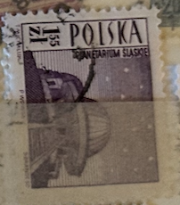
| SOURCE | TITLE| IMAGE MATCH | click to source page |
| eBay | POLAND 1950 GROSZY OVPT ON SCOTT C26A-C26C MICHEL 617-19 VFU | eBay | 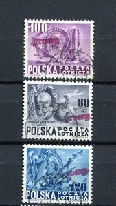 |
| The Philately | Aden 1946 Sg 29 King George VI and Houses of Parliament Sc 29 for sale at The Philately |  |
| Dreamstime.com | Polish Postage Stamp (1973) Celebrating the 500th Anniversary of Astronomer Nicolaus Copernicus. Editorial Image - Image of poland, mikolaj: 91971210 | 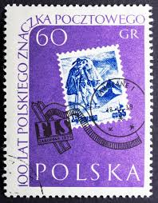 |
| Alamy | Poland postage stamp hi-res stock photography and images - Alamy | 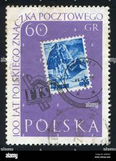 |
| bwdavis.us | WW Poland 1957 to date - Collectibles of Bwdavis |  |
| eBay | Polonia 1757-1759,1760,1769Zf (completa edición) nuevo con goma original 1967 gu | eBay | 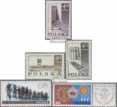 |
| Etsy | Poland 1948 FDR Pulaski Kosciuszko Set of 3 Air Mail Stamps Mint Never Hinged - Etsy | 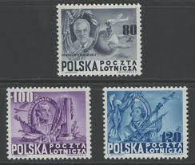 |
| Znaczki-pl.com | Znaczki | 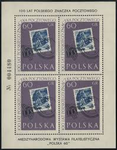 |
| The Itty Bitty Stamp Company | Poland Scott # 1620-1624 Used – The Itty Bitty Stamp Company | 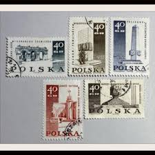 |
| eBay | poland 1948 Sc C26A/C roosevelt,set n476 | eBay | 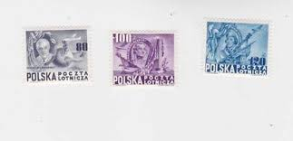 |
| eBay | POLAND -1967- Lambinowice-Jencom - Struggle and Martyrdom/Polish People - #1488 | eBay | 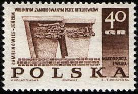 |
| Mercari | 1910 Portugal (No.175) | Mercari | 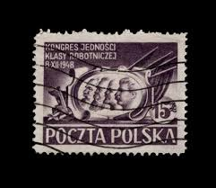 |
| eBay | Poland 617/19 Mint Tested Jungjohann BPP 2/9531 | eBay | 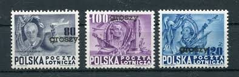 |
| Amazon.com | Amazon.com: Poland 1949,1950,1959-1961,1962 (Complete.Issue.) unmounted Mint/Never hinged ** MNH 1969 Freedom, Monument, Security, ILO (Stamps for Collectors) Horses/Zebras : Toys & Games | 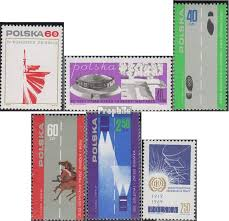 |
| eBay | Poland stamps 1950 MI 617-619 GROSZY ovpts signed Krawczyk CANC VF Scarce set | eBay | 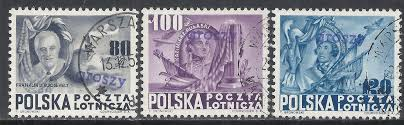 |
| Amazon.com | Amazon.com: Poland 1319-1324 Couples (Complete.Issue.) with zierfeld unmounted Mint/Never hinged ** MNH 1962 Polish Nordgebiete (Stamps for Collectors) : Toys & Games | 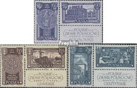 |
| eBay | Poland 2612-2615 (complete issue) used 1979 60 years polish. ol | eBay | 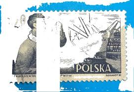 |
| eBay | POLAND 1950 GROSZY OVPT ON SCOTT ROOSEVELT ISSUE C26A-C26C MICHEL 617-19 MNH | eBay | 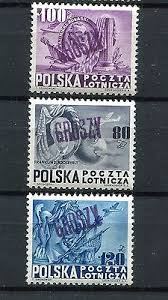 |
| eBay | Poland stamps 1950 MI 617-619 Groszy MNH VF | eBay | 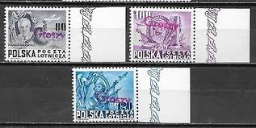 |
| eBay | Poland 1482-1489 sheets/80 folded,MNH. Mi 1637/1819. Memorials of Fight of WW II | eBay | 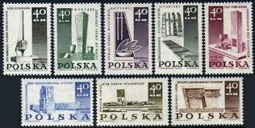 |
| buyhungarianstamps.com | 668-675 Poland - Warsaw Monuments (MNH) – Eastern Europe Postage Stamps | Hungaria Stamp Exchange | 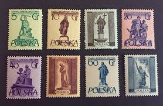 |
| The Itty Bitty Stamp Company | Poland Scott # 1050-1052 Used – The Itty Bitty Stamp Company | 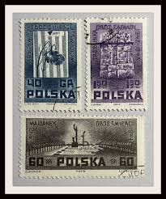 |
| postbeeld.com | Stamp 1923, Poland stamp out of set, 1923 - Collecting Stamps - PostBeeld - Online Stamp Shop - Collecting | 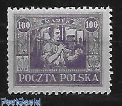 |
| eBay | Poland WW2 1939-1945 Memorial set | eBay | 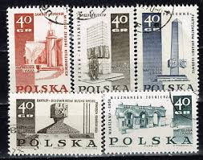 |
| eBay | Poland - 1955 - 10Gr - Warsaw Statues - Feliks Dzierzynski - #18148 | eBay |  |
| eBay | Poland 1950 used Mi 665 “GROSZY” DOUBLE overprinted on Worker and Miner / RARE | eBay | 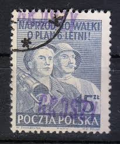 |
| brendanmanley.ca | Complete Stamp Set MNH 1965 Poland Peaceful Sun Stamp Collection - Complete Set 1606-1611 MNH Never Hinged Mint Condition Peaceful Sun Space Stamps | 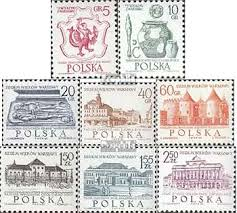 |
| eBay | Poland stamps 1950 MI 618 GROSZY Ovpt CANC VF | eBay | 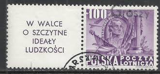 |
| eBay | Poland - 1968 Memorials for the Sacrifices of World War II | eBay | 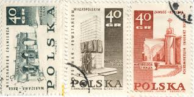 |
| Invaluable.com | Sold at Auction: 1970's - Poland - 34 Vintage Stamps - Flowers / Tank / Capitol / Painting / Art - Excellent - Collectible | 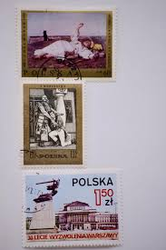 |
| eBay | Eight Poland stamps 1958 - 1977 Tarnow Warsaw Sojuz Apollo Giraffe Dog Chorzow | eBay | 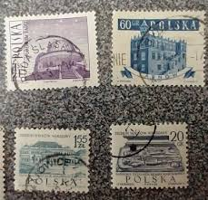 |
| eBay | Poland 1727-1729,1738-1739 mint/MNH 1966 Archeology, millennium | eBay | 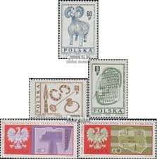 |
| eBay | Poland New Issue 2025-02-28 (TB) First Armored Division | eBay | 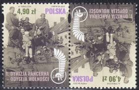 |
| eBay | POLAND 1950 GROSZY OVPT ON SCOTT C26A-C26C WITH TABS MICHEL 617-19 MNH | eBay | 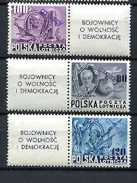 |
| eBay | Poland Stamps Yvert #A24/26 MH & NNG C/V €97=$108 Very Nice Lot | eBay | 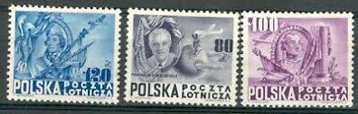 |
| eBay | Poland Motorcycle stamp 1955 PL | eBay | 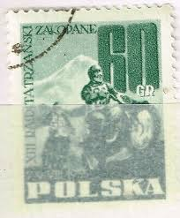 |
| eBay | Poland King Casimir III the Great stamp 1938 MLH A-15 | eBay | 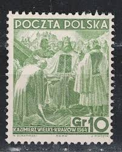 |
| eBay | POL0181 Poland boats ships maps fine art fine use | eBay | 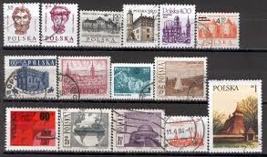 |
| eBay | Poland 1965 WARSAW 700th Anniversary Complete MNH Set SC ## 1934-1942 | eBay | 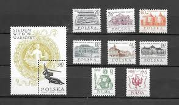 |
| eBay UK | POLAND:1966 SC#1441,1444,1446 MH Tourist Attractions R141 | eBay UK | 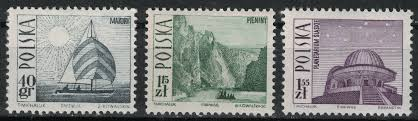 |
| Amazon.com | Amazon.com: Poland 1350-1351 (Complete.Issue.) unmounted Mint/Never hinged ** MNH 1962 Spaceships Vostok 3 and 4 (Stamps for Collectors) Space : Toys & Games | 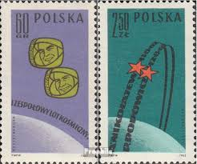 |
| Amazon.com | Amazon.com: Poland 1790-1792,1793-1795,1796 (Complete.Issue.) unmounted Mint/Never hinged ** MNH 1967 War, Revolution, Philately (Stamps for Collectors) Space : Toys & Games | 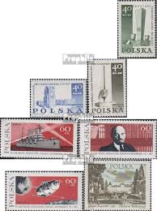 |
| eBay | Poland Eagle Coat of Arms classic stamp 1921 | eBay | 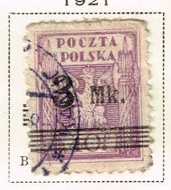 |
| eBay | Poland 1955 Warsaw Statues MNH | eBay | 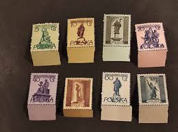 |
| eBay | POL0179 Poland 4 sets art birds fishes fine use | eBay |  |
| eBay | Polen MiNr.305,331,338,911 gestempelt 1935/1955 | eBay | 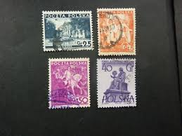 |
| eBay | 1961 POLAND SET MNH OG STAMPS #994-1001 WITH TABS SEAL | eBay | 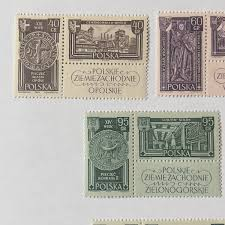 |
| postbeeld.com | Stamp 1970, Poland Chopin contest 1v, 1970 - Collecting Stamps - PostBeeld - Online Stamp Shop - Collecting | 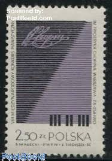 |
| lastdodo.com | Gdansk Shipyard 5 (1952) - Poland - LastDodo | 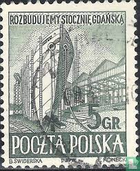 |
| eBay | Poland WW2 Majdanek extermination camp prison stamp 1969 A-15 | eBay | 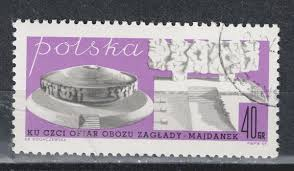 |
| eBay | Poland 1955, Warsaw Monuments, Block of 4 MNH 1029 | eBay | 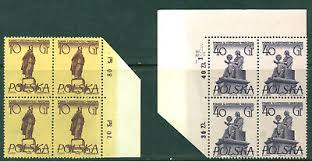 |
| eBay | POLAND - 1961 - 62 - LOT OF STAMPS ON ALBUM PAGE - MH & USED | eBay | 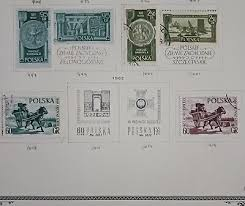 |
| eBay | Rare 1946-1947 Poland Stamp Set Mint hinged unuse and 2 used. | eBay | 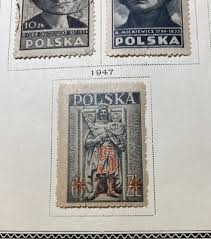 |
| eBay | Poland 1334-1342, MNH. Mi 1597-1604. Warsaw-700, 1965. Arms, Castles, Memorials. | eBay | |
| chessm.com | Art F-0138-10 Poland, Chess, 1974, 2m | |
| eBay | Poland: selection of 12 used stamps, Churches & monuments, 2002-7, Mi#3955-4367 | eBay | |
| eBay | Poland Stamp Scott #153, Used | eBay |  |
| Mark C. Grove | 1360:: Stamps, Poland, 1950, brown 35, searchlight, cancelled - Mark C. Grove | |
| Todocolección | polska, polonia - v/f 2,50 zk - katowice - Buy Antique stamps of Poland on todocoleccion | |
| Colnect | Poland: Compass and Backpack, Map of Poland, 1956 : US$ 0.06 from gondos3s : Stamps Marketplace : Stamps for sale : Colnect |